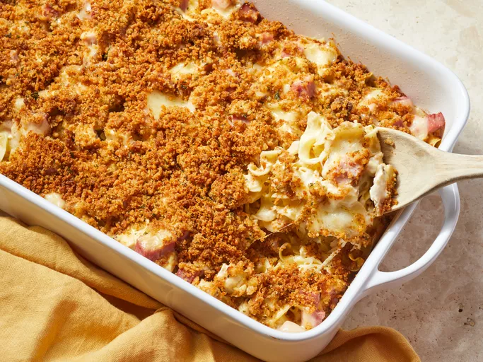

Home
Chicken Cordon Bleu Casserole

Description
This Chicken Cordon Bleu Casserole takes all the classic flavors of the
traditional dish—tender chicken, savory ham, and creamy cheese—and turns
them into a comforting, easy-to-make bake. It's perfect for family dinners
when you want something warm, rich, and satisfying.
The casserole is layered with juicy chicken, diced ham, and a buttery, cheesy
sauce, then topped with crunchy breadcrumbs. It’s simple enough for beginners
but delicious enough to impress anyone!
Ingredients
- 2–3 cups cooked chicken, shredded or cubed
- 1 cup diced ham
- 1 1/2 cups shredded Swiss cheese
- 1 cup milk
- 1 cup heavy cream
- 2 tablespoons butter
- 2 tablespoons flour
- 1–2 cups breadcrumbs
- Salt and pepper to taste
- Optional: Dijon mustard for flavor
Steps
- Preheat your oven to 375°F (190°C).
- Spread the cooked chicken evenly in a baking dish.
- Add the diced ham on top of the chicken.
- In a saucepan, melt the butter and whisk in the flour to form a roux.
- Slowly pour in the milk and cream while whisking until smooth and thickened.
- Stir in the shredded Swiss cheese until melted. Add salt, pepper, and optional mustard.
- Pour the sauce over the chicken and ham layers.
- Top with breadcrumbs.
- Bake for 25–30 minutes or until golden and bubbly.
- Let it cool slightly before serving.